Topic 06: Data Visualizations#
onl01-dtsc-ft-022221
03/04/21
Learning Objectives#
Quick Intro to Object-Oriented-Programming
Learn about the anatomy of a Matplotlib figure.
Learn about how other packages use Matplotlib
Discuss and demonstrate the 2 different syntaxes/interfaces of Matplotlib
Activity: Remaining portion of Topic 05’s Data Cleaning Project with Superheroes
Questions/Comments?#
Un-Answered Topic 05 Questions#
The data cleaning mini project’s data set (superheroes) had a decent amount of negative values for heights and weights that it appears were not taken out in the solution. I replaced these with medians, and got really weird displots for the gender-height-weight charts, although the regular hist() plots were less crazy looking.
Can you go over displots a little more, and why we might use them instead of the other ways to do plots?
When should we use map(), apply(), mapapply()? I’m having a hard time telling how they’re different.
One of the solutions in the more data mapping lab included the following code to print the mean, median, and stddev of the age column.
How was it possible to run functions from a list of strings representing the function names and apply()?
age_na_mean = df['Age'].fillna(value=df['Age'].mean())
print(age_na_mean.apply(['mean', 'median', 'std']))
Can you explain stack() and unstack a bit more? I ran through the lab examples but didn’t really get what was happening
New Topic 06 Questions#
Subplots with Enumeration Lab:
I’m confused as to how the enumeration function works with the subplots on the Subplots and Enumeration - Lab. Shouldn’t value 1 be country name and value 2 be year? Why is value 2 population and why is the for loop not iterating through year or the rest of the information?
Also related to this why don’t we specify the ‘Year’ and ‘Value’ as columns of the population variable when plotting as population[‘Year’] and population[‘Value’]? learn-co-curriculum/dsc-subplots-and-enumeration-lab
What does it mean to be ‘Object-Oriented’?#
“Everything is an object.”#
some Python sensei
intro_object_oriented_programming.ipynb#
OOP Vocabulary#
“Object” is an instance of a template class that currently exists in memory
“Calling” a function:
When we use ( ) with a function we are calling it.
Function: Codes that manipulates data in a useful way.
Class: Template/blue print.
Instance: Ab object built from the class blueprint
Attribute: A variable stored inside an object.
Method: Functions are stored inside an object.
Intro to Matplotlib#
Matplotlib is the backbone of plotting in python and used by pandas,seaborn,etc.
‘Pandas Visualization docs’
Matplotlib is powerful but can be a bit confusing at times because of its 2 sets of commands:
the matplotlib.pyplot functions (
plt.bar(),plt.title())the object_oriented methods (
ax.bar(),ax.set_title())
The 2 syntaxes can be confusing at first and cause problems & odd results when mixed together.
Learn about some of the problems when mixing types.
Example: see how plt.title()/plt.xlabel(),etc. can behave strangely in subplots.
References#
Blog Posts#
Bookmark this article, its the best explanation of how matploblib’S 2 interfaces work:
My Blog Post on Making Customized Figures in seaborn
This covers some concepts we didn’t have time to cover, like ticklabel formatters.
Matplotlib Offical Documentation#
Matplotlib Anatomy / Structure#
Matplotlib Figures are composed of 3 different objects:
Figureis the largest bucket and contains everything else. It is like a picture frame without any actual images in it.Axesare the actual plot / image inside of the Figure / frame. - this is the sameaxas infig, ax = plt.subplots()and that is returned when you create a Pandas or Seaborn figure. - There is an ‘Axesfor each subplot in the Figure -Axescontain information about the titles, labels, grid,background, they also contain an. See the figure below for the contents ofAxes`

Inside Axes there is an
Axiswhich is further divided into anAxis.xaxisand anAxis.yaxisthat contain the ticks and the tick lables.
Matplotlib Fig, ax#
## SETTING MATPLOTLIB STYLE AND DEFAULT FIGSIZE
import matplotlib.pyplot as plt
import matplotlib as mpl
## Set the default style and figsize
print(plt.style.available)
['Solarize_Light2', '_classic_test_patch', 'bmh', 'classic', 'dark_background', 'fast', 'fivethirtyeight', 'ggplot', 'grayscale', 'seaborn', 'seaborn-bright', 'seaborn-colorblind', 'seaborn-dark', 'seaborn-dark-palette', 'seaborn-darkgrid', 'seaborn-deep', 'seaborn-muted', 'seaborn-notebook', 'seaborn-paper', 'seaborn-pastel', 'seaborn-poster', 'seaborn-talk', 'seaborn-ticks', 'seaborn-white', 'seaborn-whitegrid', 'tableau-colorblind10']
plt.rcParams['figure.figsize']
[6.0, 4.0]
plt.style.use('fivethirtyeight')
plt.rcParams['figure.figsize'] = [12,8]
## Make a fig and an ax
fig,ax = plt.subplots()
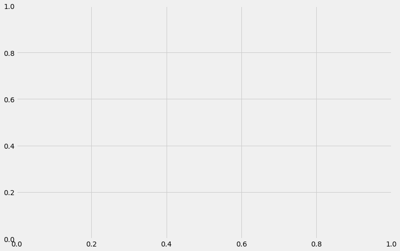
# fig
## What does the ax look like?
ax
<AxesSubplot:>
## what about the fig?
fig
Previously On Topic 05: Project - Data Cleaning#
Official Solution: learn-co-curriculum/dsc-data-cleaning-project
Introduction#
In this lab, we’ll make use of everything we’ve learned about pandas, data cleaning, and exploratory data analysis. In order to complete this lab, you’ll have to import, clean, combine, reshape, and visualize data to answer questions provided, as well as your own questions!
Objectives#
You will be able to:
Use different types of joins to merge DataFrames
Identify missing values in a dataframe using built-in methods
Evaluate and execute the best strategy for dealing with missing, duplicate, and erroneous values for a given dataset
Inspect data for duplicates or extraneous values and remove them
The dataset#
In this lab, we’ll work with the comprehensive Super Heroes Dataset, which can be found on Kaggle!
Getting Started#
In the cell below:
Import and alias pandas as
pdImport and alias numpy as
npImport and alias seaborn as
snsImport and alias matplotlib.pyplot as
pltSet matplotlib visualizations to display inline in the notebook
import pandas as pd
import numpy as np
import seaborn as sns
# import matplotlib.pyplot as plt
%matplotlib inline
For this lab, our dataset is split among two different sources – 'heroes_information.csv' and 'super_hero_powers.csv'.
Use pandas to read in each file and store them in DataFrames in the appropriate variables below. Then, display the .head() of each to ensure that everything loaded correctly.
heroes_url ='https://raw.githubusercontent.com/flatiron-school/Online-DS-FT-022221-Cohort-Notes/master/Phase_1/topic_05_data_cleaning_in_pandas/labs_from_class/dsc-data-cleaning-project-master/heroes_information.csv'
heroes_df = pd.read_csv(heroes_url)
powers_url = 'https://raw.githubusercontent.com/flatiron-school/Online-DS-FT-022221-Cohort-Notes/master/Phase_1/topic_05_data_cleaning_in_pandas/labs_from_class/dsc-data-cleaning-project-master/super_hero_powers.csv'
powers_df = pd.read_csv(powers_url)
# display(heroes_df.head(), powers_df.head())
It looks as if the heroes information dataset contained an index column. We did not specify that this dataset contained an index column, because we hadn’t seen it yet. Pandas does not know how to tell apart an index column from any other data, so it stored it with the column name Unnamed: 0.
Our DataFrame provided row indices by default, so this column is not needed. Drop it from the DataFrame in place in the cell below, and then display the head of heroes_df to ensure that it worked properly.
heroes_df = pd.read_csv(heroes_url, index_col=0)
heroes_df
| name | Gender | Eye color | Race | Hair color | Height | Publisher | Skin color | Alignment | Weight | |
|---|---|---|---|---|---|---|---|---|---|---|
| 0 | A-Bomb | Male | yellow | Human | No Hair | 203.0 | Marvel Comics | - | good | 441.0 |
| 1 | Abe Sapien | Male | blue | Icthyo Sapien | No Hair | 191.0 | Dark Horse Comics | blue | good | 65.0 |
| 2 | Abin Sur | Male | blue | Ungaran | No Hair | 185.0 | DC Comics | red | good | 90.0 |
| 3 | Abomination | Male | green | Human / Radiation | No Hair | 203.0 | Marvel Comics | - | bad | 441.0 |
| 4 | Abraxas | Male | blue | Cosmic Entity | Black | -99.0 | Marvel Comics | - | bad | -99.0 |
| ... | ... | ... | ... | ... | ... | ... | ... | ... | ... | ... |
| 729 | Yellowjacket II | Female | blue | Human | Strawberry Blond | 165.0 | Marvel Comics | - | good | 52.0 |
| 730 | Ymir | Male | white | Frost Giant | No Hair | 304.8 | Marvel Comics | white | good | -99.0 |
| 731 | Yoda | Male | brown | Yoda's species | White | 66.0 | George Lucas | green | good | 17.0 |
| 732 | Zatanna | Female | blue | Human | Black | 170.0 | DC Comics | - | good | 57.0 |
| 733 | Zoom | Male | red | - | Brown | 185.0 | DC Comics | - | bad | 81.0 |
734 rows × 10 columns
Familiarize yourself with the dataset#
The first step in our Exploratory Data Analysis will be to get familiar with the data. This step includes:
Understanding the dimensionality of your dataset
Investigating what type of data it contains, and the data types used to store it
Discovering how missing values are encoded, and how many there are
Getting a feel for what information it does and doesn’t contain
In the cell below, get the descriptive statistics of each DataFrame.
heroes_df.info()
<class 'pandas.core.frame.DataFrame'>
Int64Index: 734 entries, 0 to 733
Data columns (total 10 columns):
# Column Non-Null Count Dtype
--- ------ -------------- -----
0 name 734 non-null object
1 Gender 734 non-null object
2 Eye color 734 non-null object
3 Race 734 non-null object
4 Hair color 734 non-null object
5 Height 734 non-null float64
6 Publisher 719 non-null object
7 Skin color 734 non-null object
8 Alignment 734 non-null object
9 Weight 732 non-null float64
dtypes: float64(2), object(8)
memory usage: 63.1+ KB
heroes_df.describe().round(2)
| Height | Weight | |
|---|---|---|
| count | 734.00 | 732.00 |
| mean | 102.25 | 43.86 |
| std | 139.62 | 130.82 |
| min | -99.00 | -99.00 |
| 25% | -99.00 | -99.00 |
| 50% | 175.00 | 62.00 |
| 75% | 185.00 | 90.00 |
| max | 975.00 | 900.00 |
Dealing with missing values#
Starting in the cell below, detect and deal with any missing values in either DataFrame. Then, explain your methodology for detecting and dealing with outliers in the markdown section below. Be sure to explain your strategy for dealing with missing values in numeric columns, as well as your strategy for dealing with missing values in non-numeric columns.
Note that if you need to add more cells to write code in, you can do this by:
1. Highlighting a cell and then pressing ESC to enter command mode.
2. Press A to add a cell above the highlighted cell, or B to add a cell below the highlighted cell.
Describe your strategy below this line:
Visual Alternatives#
# # !pip install missingno
# import missingno
# missingno.matrix(heroes_df)
heroes_df#
res = heroes_df.isna().sum()
res[res>0]
Publisher 15
Weight 2
dtype: int64
heroes_df[heroes_df.isna().any(axis=1)]
| name | Gender | Eye color | Race | Hair color | Height | Publisher | Skin color | Alignment | Weight | |
|---|---|---|---|---|---|---|---|---|---|---|
| 46 | Astro Boy | Male | brown | - | Black | -99.0 | NaN | - | good | -99.0 |
| 86 | Bionic Woman | Female | blue | Cyborg | Black | -99.0 | NaN | - | good | -99.0 |
| 138 | Brundlefly | Male | - | Mutant | - | 193.0 | NaN | - | - | -99.0 |
| 175 | Chuck Norris | Male | - | - | - | 178.0 | NaN | - | good | -99.0 |
| 204 | Darkside | - | - | - | - | -99.0 | NaN | - | bad | -99.0 |
| 244 | Ethan Hunt | Male | brown | Human | Brown | 168.0 | NaN | - | good | -99.0 |
| 263 | Flash Gordon | Male | - | - | - | -99.0 | NaN | - | good | -99.0 |
| 286 | Godzilla | - | - | Kaiju | - | 108.0 | NaN | grey | bad | NaN |
| 348 | Jack Bauer | Male | - | - | - | -99.0 | NaN | - | good | -99.0 |
| 354 | Jason Bourne | Male | - | Human | - | -99.0 | NaN | - | good | -99.0 |
| 381 | Katniss Everdeen | Female | - | Human | - | -99.0 | NaN | - | good | -99.0 |
| 389 | King Kong | Male | yellow | Animal | Black | 30.5 | NaN | - | good | NaN |
| 393 | Kool-Aid Man | Male | black | - | No Hair | -99.0 | NaN | red | good | -99.0 |
| 542 | Rambo | Male | brown | Human | Black | 178.0 | NaN | - | good | 83.0 |
| 658 | The Cape | Male | - | - | - | -99.0 | NaN | - | good | -99.0 |
## Fill Publisher with placeholder
heroes_df['Publisher'] = heroes_df['Publisher'].fillna('Missing')
## Check Remaining Missing
heroes_df[heroes_df.isna().any(axis=1)]
| name | Gender | Eye color | Race | Hair color | Height | Publisher | Skin color | Alignment | Weight | |
|---|---|---|---|---|---|---|---|---|---|---|
| 286 | Godzilla | - | - | Kaiju | - | 108.0 | Missing | grey | bad | NaN |
| 389 | King Kong | Male | yellow | Animal | Black | 30.5 | Missing | - | good | NaN |
## Lets try fillna with the max
heroes_df['Weight'].max()
900.0
heroes_df['Weight'].fillna(heroes_df['Weight'].max(),inplace=True)
heroes_df[heroes_df.isna().any(axis=1)]
| name | Gender | Eye color | Race | Hair color | Height | Publisher | Skin color | Alignment | Weight |
|---|
heroes_df.isna().sum()
name 0
Gender 0
Eye color 0
Race 0
Hair color 0
Height 0
Publisher 0
Skin color 0
Alignment 0
Weight 0
dtype: int64
powers_df#
res = powers_df.isna().sum()
res[ res>0]
Series([], dtype: int64)
Joining, Grouping, and Aggregating#
In the cell below, join the two DataFrames. Think about which sort of join you should use, as well as which columns you should join on. Rename columns and manipulate as needed.
HINT: Consider the possibility that the columns you choose to join on contain duplicate entries. If that is the case, devise a strategy to deal with the duplicates.
HINT: If the join throws an error message, consider setting the column you want to join on as the index for each DataFrame.
heroes_df[heroes_df.duplicated(keep=False)]
| name | Gender | Eye color | Race | Hair color | Height | Publisher | Skin color | Alignment | Weight | |
|---|---|---|---|---|---|---|---|---|---|---|
| 290 | Goliath | Male | - | Human | - | -99.0 | Marvel Comics | - | good | -99.0 |
| 291 | Goliath | Male | - | Human | - | -99.0 | Marvel Comics | - | good | -99.0 |
heroes_df = heroes_df[~heroes_df.duplicated()]
heroes_df[heroes_df.duplicated()]
| name | Gender | Eye color | Race | Hair color | Height | Publisher | Skin color | Alignment | Weight |
|---|
heroes_df.drop_duplicates(inplace=True)
<ipython-input-188-350b54ced4ac>:1: SettingWithCopyWarning:
A value is trying to be set on a copy of a slice from a DataFrame
See the caveats in the documentation: https://pandas.pydata.org/pandas-docs/stable/user_guide/indexing.html#returning-a-view-versus-a-copy
heroes_df.drop_duplicates(inplace=True)
display(heroes_df.head(2),powers_df.head(2))
| name | Gender | Eye color | Race | Hair color | Height | Publisher | Skin color | Alignment | Weight | |
|---|---|---|---|---|---|---|---|---|---|---|
| 0 | A-Bomb | Male | yellow | Human | No Hair | 203.0 | Marvel Comics | - | good | 441.0 |
| 1 | Abe Sapien | Male | blue | Icthyo Sapien | No Hair | 191.0 | Dark Horse Comics | blue | good | 65.0 |
| hero_names | Agility | Accelerated Healing | Lantern Power Ring | Dimensional Awareness | Cold Resistance | Durability | Stealth | Energy Absorption | Flight | ... | Web Creation | Reality Warping | Odin Force | Symbiote Costume | Speed Force | Phoenix Force | Molecular Dissipation | Vision - Cryo | Omnipresent | Omniscient | |
|---|---|---|---|---|---|---|---|---|---|---|---|---|---|---|---|---|---|---|---|---|---|
| 0 | 3-D Man | True | False | False | False | False | False | False | False | False | ... | False | False | False | False | False | False | False | False | False | False |
| 1 | A-Bomb | False | True | False | False | False | True | False | False | False | ... | False | False | False | False | False | False | False | False | False | False |
2 rows × 168 columns
## Join with integer indexes joins incorrectly
# heroes_df.join(powers_df,)[['name','hero_names']]
df = pd.merge(heroes_df,powers_df,left_on='name',right_on='hero_names',how='inner')
df
| name | Gender | Eye color | Race | Hair color | Height | Publisher | Skin color | Alignment | Weight | ... | Web Creation | Reality Warping | Odin Force | Symbiote Costume | Speed Force | Phoenix Force | Molecular Dissipation | Vision - Cryo | Omnipresent | Omniscient | |
|---|---|---|---|---|---|---|---|---|---|---|---|---|---|---|---|---|---|---|---|---|---|
| 0 | A-Bomb | Male | yellow | Human | No Hair | 203.0 | Marvel Comics | - | good | 441.0 | ... | False | False | False | False | False | False | False | False | False | False |
| 1 | Abe Sapien | Male | blue | Icthyo Sapien | No Hair | 191.0 | Dark Horse Comics | blue | good | 65.0 | ... | False | False | False | False | False | False | False | False | False | False |
| 2 | Abin Sur | Male | blue | Ungaran | No Hair | 185.0 | DC Comics | red | good | 90.0 | ... | False | False | False | False | False | False | False | False | False | False |
| 3 | Abomination | Male | green | Human / Radiation | No Hair | 203.0 | Marvel Comics | - | bad | 441.0 | ... | False | False | False | False | False | False | False | False | False | False |
| 4 | Abraxas | Male | blue | Cosmic Entity | Black | -99.0 | Marvel Comics | - | bad | -99.0 | ... | False | False | False | False | False | False | False | False | False | False |
| ... | ... | ... | ... | ... | ... | ... | ... | ... | ... | ... | ... | ... | ... | ... | ... | ... | ... | ... | ... | ... | ... |
| 655 | Yellowjacket II | Female | blue | Human | Strawberry Blond | 165.0 | Marvel Comics | - | good | 52.0 | ... | False | False | False | False | False | False | False | False | False | False |
| 656 | Ymir | Male | white | Frost Giant | No Hair | 304.8 | Marvel Comics | white | good | -99.0 | ... | False | False | False | False | False | False | False | False | False | False |
| 657 | Yoda | Male | brown | Yoda's species | White | 66.0 | George Lucas | green | good | 17.0 | ... | False | False | False | False | False | False | False | False | False | False |
| 658 | Zatanna | Female | blue | Human | Black | 170.0 | DC Comics | - | good | 57.0 | ... | False | False | False | False | False | False | False | False | False | False |
| 659 | Zoom | Male | red | - | Brown | 185.0 | DC Comics | - | bad | 81.0 | ... | False | False | False | False | False | False | False | False | False | False |
660 rows × 178 columns
Topic 06 Study Group - Superheroes Continued#
In the cell below, subset male and female heroes into different dataframes. Create a scatterplot of the height and weight of each hero, with weight as the y-axis. Plot both the male and female heroes subset into each dataframe, and make the color for each point in the scatterplot correspond to the gender of the superhero.
# plt.style.use('seaborn-talk')
sns.scatterplot(data=df, x='Height', y='Weight',hue='Gender')
<AxesSubplot:xlabel='Height', ylabel='Weight'>
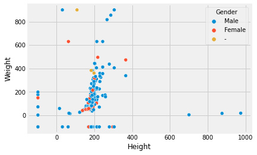
Addressing -99s#
## Visualize all heroes that had a negative height or weight
df[(df['Height']<0) | (df['Weight']<0)]
| name | Gender | Eye color | Race | Hair color | Height | Publisher | Skin color | Alignment | Weight | ... | Web Creation | Reality Warping | Odin Force | Symbiote Costume | Speed Force | Phoenix Force | Molecular Dissipation | Vision - Cryo | Omnipresent | Omniscient | |
|---|---|---|---|---|---|---|---|---|---|---|---|---|---|---|---|---|---|---|---|---|---|
| 4 | Abraxas | Male | blue | Cosmic Entity | Black | -99.0 | Marvel Comics | - | bad | -99.0 | ... | False | False | False | False | False | False | False | False | False | False |
| 6 | Adam Monroe | Male | blue | - | Blond | -99.0 | NBC - Heroes | - | good | -99.0 | ... | False | False | False | False | False | False | False | False | False | False |
| 13 | Alex Mercer | Male | - | Human | - | -99.0 | Wildstorm | - | bad | -99.0 | ... | False | False | False | False | False | False | False | False | False | False |
| 14 | Alex Woolsly | Male | - | - | - | -99.0 | NBC - Heroes | - | good | -99.0 | ... | False | False | False | False | False | False | False | False | False | False |
| 16 | Allan Quatermain | Male | - | - | - | -99.0 | Wildstorm | - | good | -99.0 | ... | False | False | False | False | False | False | False | False | False | False |
| ... | ... | ... | ... | ... | ... | ... | ... | ... | ... | ... | ... | ... | ... | ... | ... | ... | ... | ... | ... | ... | ... |
| 642 | Watcher | Male | - | - | - | -99.0 | Marvel Comics | - | good | -99.0 | ... | False | False | False | False | False | False | False | False | False | False |
| 643 | Weapon XI | Male | - | - | - | -99.0 | Marvel Comics | - | bad | -99.0 | ... | False | False | False | False | False | False | False | False | False | False |
| 644 | White Canary | Female | brown | Human | Black | -99.0 | DC Comics | - | bad | -99.0 | ... | False | False | False | False | False | False | False | False | False | False |
| 645 | Wildfire | Male | - | - | - | -99.0 | DC Comics | - | good | -99.0 | ... | False | False | False | False | False | False | False | False | False | False |
| 656 | Ymir | Male | white | Frost Giant | No Hair | 304.8 | Marvel Comics | white | good | -99.0 | ... | False | False | False | False | False | False | False | False | False | False |
195 rows × 178 columns
## Replace Negative Heights with NaN - Use .map
df['Height'] = df['Height'].map(lambda x: np.nan if x<0 else x)
df['Height'].isna().sum()
170
## Replace Negative Weights with NaN - Use .loc indexing
df.loc[ (df['Weight']<0),'Weight'] = np.nan
df['Weight'].isna().sum()
190
## Check for negaative heights/weights again
df[(df['Height']<0) | (df['Weight']<0)]
| name | Gender | Eye color | Race | Hair color | Height | Publisher | Skin color | Alignment | Weight | ... | Web Creation | Reality Warping | Odin Force | Symbiote Costume | Speed Force | Phoenix Force | Molecular Dissipation | Vision - Cryo | Omnipresent | Omniscient |
|---|
0 rows × 178 columns
Filling Height and Weight using Gender-means#
## Get the mean height and weight by gender using .groupby
gender_vals = df.groupby('Gender')[['Height','Weight']].mean()
gender_vals
| Height | Weight | |
|---|---|---|
| Gender | ||
| - | 177.666667 | 243.888889 |
| Female | 174.748175 | 79.859259 |
| Male | 192.462209 | 128.874233 |
## You can use .agg with a groupy and use the string name of a function
df.groupby('Gender').agg('median')
| Height | Weight | Agility | Accelerated Healing | Lantern Power Ring | Dimensional Awareness | Cold Resistance | Durability | Stealth | Energy Absorption | ... | Web Creation | Reality Warping | Odin Force | Symbiote Costume | Speed Force | Phoenix Force | Molecular Dissipation | Vision - Cryo | Omnipresent | Omniscient | |
|---|---|---|---|---|---|---|---|---|---|---|---|---|---|---|---|---|---|---|---|---|---|
| Gender | |||||||||||||||||||||
| - | 183.0 | 99.0 | False | False | False | False | False | False | False | False | ... | False | False | False | False | False | False | False | False | False | False |
| Female | 170.0 | 58.0 | False | False | False | False | False | False | False | False | ... | False | False | False | False | False | False | False | False | False | False |
| Male | 185.0 | 90.0 | False | False | False | False | False | False | False | False | ... | False | False | False | False | False | False | False | False | False | False |
3 rows × 169 columns
## test out slicing out male Weight
gender_vals.loc['Male','Weight']
128.87423312883436
# df[(df['Weight'].isna()) & (df['Gender']=='Male')]
## fill Weight by Gender for Males
df.loc[(df['Weight'].isna())&(df['Gender']=='Male'), "Weight"] \
= gender_vals.loc['Male','Weight']
df
| name | Gender | Eye color | Race | Hair color | Height | Publisher | Skin color | Alignment | Weight | ... | Web Creation | Reality Warping | Odin Force | Symbiote Costume | Speed Force | Phoenix Force | Molecular Dissipation | Vision - Cryo | Omnipresent | Omniscient | |
|---|---|---|---|---|---|---|---|---|---|---|---|---|---|---|---|---|---|---|---|---|---|
| 0 | A-Bomb | Male | yellow | Human | No Hair | 203.0 | Marvel Comics | - | good | 441.000000 | ... | False | False | False | False | False | False | False | False | False | False |
| 1 | Abe Sapien | Male | blue | Icthyo Sapien | No Hair | 191.0 | Dark Horse Comics | blue | good | 65.000000 | ... | False | False | False | False | False | False | False | False | False | False |
| 2 | Abin Sur | Male | blue | Ungaran | No Hair | 185.0 | DC Comics | red | good | 90.000000 | ... | False | False | False | False | False | False | False | False | False | False |
| 3 | Abomination | Male | green | Human / Radiation | No Hair | 203.0 | Marvel Comics | - | bad | 441.000000 | ... | False | False | False | False | False | False | False | False | False | False |
| 4 | Abraxas | Male | blue | Cosmic Entity | Black | NaN | Marvel Comics | - | bad | 128.874233 | ... | False | False | False | False | False | False | False | False | False | False |
| ... | ... | ... | ... | ... | ... | ... | ... | ... | ... | ... | ... | ... | ... | ... | ... | ... | ... | ... | ... | ... | ... |
| 655 | Yellowjacket II | Female | blue | Human | Strawberry Blond | 165.0 | Marvel Comics | - | good | 52.000000 | ... | False | False | False | False | False | False | False | False | False | False |
| 656 | Ymir | Male | white | Frost Giant | No Hair | 304.8 | Marvel Comics | white | good | 128.874233 | ... | False | False | False | False | False | False | False | False | False | False |
| 657 | Yoda | Male | brown | Yoda's species | White | 66.0 | George Lucas | green | good | 17.000000 | ... | False | False | False | False | False | False | False | False | False | False |
| 658 | Zatanna | Female | blue | Human | Black | 170.0 | DC Comics | - | good | 57.000000 | ... | False | False | False | False | False | False | False | False | False | False |
| 659 | Zoom | Male | red | - | Brown | 185.0 | DC Comics | - | bad | 81.000000 | ... | False | False | False | False | False | False | False | False | False | False |
660 rows × 178 columns
We need to do this for multiple columns for multiple genders.
Great chance for a function!
Take the code we used for fill Weight by Gender for Males above as the starting code for the function.
# ## How many genders does the df have?
groups = df['Gender'].unique()
groups
array(['Male', 'Female', '-'], dtype=object)
def fillna_by_groups(df,null_col, group_col='Gender',how='mean'):
gender_vals = df.groupby(group_col)[[null_col]].agg(how)
groups = df[group_col].unique()
for group in groups:
df.loc[(df[null_col].isna())&(df[group_col]==group), null_col] \
= gender_vals.loc[group,null_col]
# make our little null value trick a function
def show_nulls(df):
res = df.isna().sum()
print(res[res>0])
show_nulls(df)
Height 170
Weight 52
dtype: int64
## Use fillna_by_groups on Height and show_nulls
fillna_by_groups(df,'Height',how='median')
show_nulls(df)
Weight 52
dtype: int64
## &se fillna_by_groups on Weight and show_nulls
fillna_by_groups(df,'Weight',how='median')
show_nulls(df)
Series([], dtype: int64)
Some Initial Investigation#
Next, slice the DataFrame as needed and visualize the distribution of heights and weights by gender. You should have 4 total plots.
In the cell below:
Slice the DataFrame into separate DataFrames by gender
Complete the
show_distplot()function. This helper function should take in a DataFrame, a string containing the gender we want to visualize, and the column name we want to visualize by gender. The function should display a distplot visualization from seaborn of the column/gender combination.
Hint: Don’t forget to check the seaborn documentation for distplot if you have questions about how to use it correctly!
James Edit: Why bother making separate dataframes?!#
Optional Sub-Task: Demo the same plot being done 4 ways (Poll)#
It would be so much easier to answer the question if they were on the same figure#
# male_heroes_df = df.groupby('Gender').get_group('Male')
# female_heroes_df = df.groupby('Gender').get_group('Female')
def show_distplot(dataframe, gender, column_name):
data = dataframe.loc[ dataframe['Gender']==gender, column_name]
ax = sns.distplot(data,kde=False)
ax.set_title(f"{column_name} for {gender}")
ax.set_ylabel('Counts')
fig = ax.get_figure()
return fig, ax
# Male Height
fig,ax = show_distplot(df,'Male','Height')
/opt/anaconda3/envs/learn-env-new/lib/python3.8/site-packages/seaborn/distributions.py:2551: FutureWarning: `distplot` is a deprecated function and will be removed in a future version. Please adapt your code to use either `displot` (a figure-level function with similar flexibility) or `histplot` (an axes-level function for histograms).
warnings.warn(msg, FutureWarning)
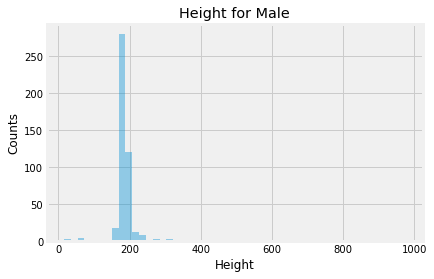
plt functions
OOP fig,ax
Pandas
Seaborn
# Male Weight
show_distplot(df,'Male','Weight')
(<Figure size 432x288 with 1 Axes>,
<AxesSubplot:title={'center':'Weight for Male'}, xlabel='Weight', ylabel='Counts'>)
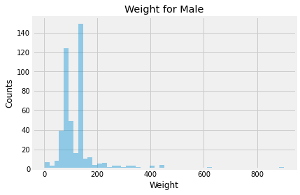
# Female Height
show_distplot(df,'Female','Height')
(<Figure size 432x288 with 1 Axes>,
<AxesSubplot:title={'center':'Height for Female'}, xlabel='Height', ylabel='Counts'>)
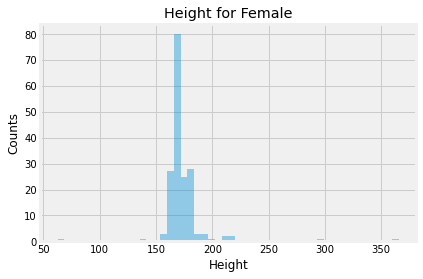
# Female Weight
show_distplot(df,'Female','Weight')
(<Figure size 432x288 with 1 Axes>,
<AxesSubplot:title={'center':'Weight for Female'}, xlabel='Weight', ylabel='Counts'>)
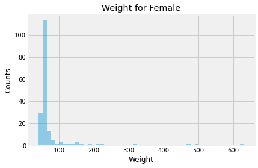
Discuss your findings from the plots above, with respect to the distribution of height and weight by gender. Your explanation should include a discussion of any relevant summary statistics, including mean, median, mode, and the overall shape of each distribution.
Write your answer below this line:
def show_displot_by_color(dataframe,column_name, color_col='Gender'):
g = sns.displot(dataframe, x=column_name, hue=color_col, height=6, aspect=1.5)
show_displot_by_color(df,'Height')
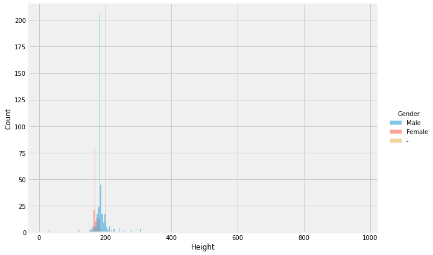
show_displot_by_color(df,'Weight')
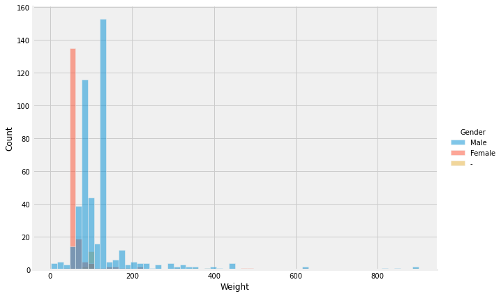
Sample Question: Most Common Powers#
The rest of this notebook will be left to you to investigate the dataset by formulating your own questions, and then seeking answers using pandas and numpy. Every answer should include some sort of visualization, when appropriate. Before moving on to formulating your own questions, use the dataset to answer the following questions about superhero powers:
What are the 5 most common powers overall?
What are the 5 most common powers in the Marvel Universe?
What are the 5 most common powers in the DC Universe?
Analyze the results you found above to answer the following question:
How do the top 5 powers in the Marvel and DC universes compare? Are they similar, or are there significant differences? How do they compare to the overall trends in the entire Superheroes dataset?
Write your answer below this line:
What are the 5 most common powers overall?#
## get list of powers
power_cols = powers_df.drop(columns=['hero_names']).columns
power_cols
Index(['Agility', 'Accelerated Healing', 'Lantern Power Ring',
'Dimensional Awareness', 'Cold Resistance', 'Durability', 'Stealth',
'Energy Absorption', 'Flight', 'Danger Sense',
...
'Web Creation', 'Reality Warping', 'Odin Force', 'Symbiote Costume',
'Speed Force', 'Phoenix Force', 'Molecular Dissipation',
'Vision - Cryo', 'Omnipresent', 'Omniscient'],
dtype='object', length=167)
df.head()
| name | Gender | Eye color | Race | Hair color | Height | Publisher | Skin color | Alignment | Weight | ... | Web Creation | Reality Warping | Odin Force | Symbiote Costume | Speed Force | Phoenix Force | Molecular Dissipation | Vision - Cryo | Omnipresent | Omniscient | |
|---|---|---|---|---|---|---|---|---|---|---|---|---|---|---|---|---|---|---|---|---|---|
| 0 | A-Bomb | Male | yellow | Human | No Hair | 203.0 | Marvel Comics | - | good | 441.000000 | ... | False | False | False | False | False | False | False | False | False | False |
| 1 | Abe Sapien | Male | blue | Icthyo Sapien | No Hair | 191.0 | Dark Horse Comics | blue | good | 65.000000 | ... | False | False | False | False | False | False | False | False | False | False |
| 2 | Abin Sur | Male | blue | Ungaran | No Hair | 185.0 | DC Comics | red | good | 90.000000 | ... | False | False | False | False | False | False | False | False | False | False |
| 3 | Abomination | Male | green | Human / Radiation | No Hair | 203.0 | Marvel Comics | - | bad | 441.000000 | ... | False | False | False | False | False | False | False | False | False | False |
| 4 | Abraxas | Male | blue | Cosmic Entity | Black | 185.0 | Marvel Comics | - | bad | 128.874233 | ... | False | False | False | False | False | False | False | False | False | False |
5 rows × 178 columns
## Save the sum of the power cols
power_counts = df[power_cols].sum()
power_counts.sort_values(ascending=True).tail(10).plot(kind='barh')
<AxesSubplot:>
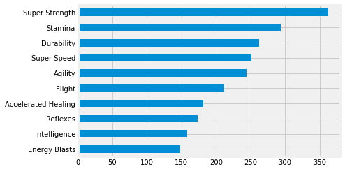
What are the 5 most common powers in the Marvel Universe?#
df["Publisher"].value_counts()
Marvel Comics 341
DC Comics 196
Dark Horse Comics 18
NBC - Heroes 18
Image Comics 14
George Lucas 13
Missing 13
Star Trek 6
Team Epic TV 5
SyFy 5
IDW Publishing 4
ABC Studios 4
Icon Comics 4
Shueisha 4
Wildstorm 3
HarperCollins 3
Universal Studios 1
South Park 1
Titan Books 1
J. R. R. Tolkien 1
Rebellion 1
Hanna-Barbera 1
J. K. Rowling 1
Sony Pictures 1
Microsoft 1
Name: Publisher, dtype: int64
## What are the 5 most common powers in the Marvel Universe?
publisher = 'Marvel Comics'
power_counts = df.loc[ df['Publisher']==publisher, power_cols].sum()#head()
ax = power_counts.sort_values(ascending=True).tail().plot(kind='barh')
ax.set_title(f"Top 5 Super Powers - {publisher}")
Text(0.5, 1.0, 'Top 5 Super Powers - Marvel Comics')
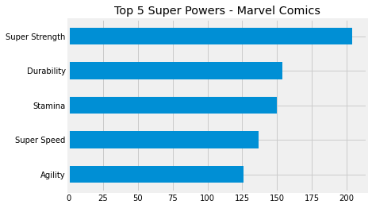
## What are the 5 most common powers in the Marvel Universe?
publisher = 'DC Comics'
power_counts = df.loc[ df['Publisher']==publisher, power_cols].sum()#head()
ax = power_counts.sort_values(ascending=True).tail().plot(kind='barh')
ax.set_title(f"Top 5 Super Powers - {publisher}")
Text(0.5, 1.0, 'Top 5 Super Powers - DC Comics')
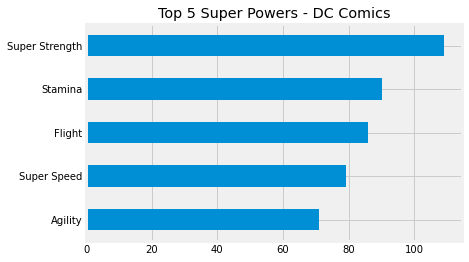
Level-Ups#
Your Own Investigation#
For the remainder of this lab, you’ll be focusing on coming up with and answering your own question, just like we did above. Your question should not be overly simple, and should require both descriptive statistics and data visualization to answer. In case you’re unsure of what questions to ask, some sample questions have been provided below.
Explain your question below this line:
Which powers have the highest chance of co-occurring in a hero (e.g. super strength and flight), and does this differ by gender?#
## Get the correlation matrix for JUST the power cols
corr = df[power_cols].corr()
corr
| Agility | Accelerated Healing | Lantern Power Ring | Dimensional Awareness | Cold Resistance | Durability | Stealth | Energy Absorption | Flight | Danger Sense | ... | Web Creation | Reality Warping | Odin Force | Symbiote Costume | Speed Force | Phoenix Force | Molecular Dissipation | Vision - Cryo | Omnipresent | Omniscient | |
|---|---|---|---|---|---|---|---|---|---|---|---|---|---|---|---|---|---|---|---|---|---|
| Agility | 1.000000 | 0.274982 | 0.022883 | 0.028897 | 0.106374 | 0.142029 | 0.393915 | 0.044324 | -0.015970 | 0.247503 | ... | 0.144587 | 0.083304 | 0.071987 | 0.110566 | 0.050864 | 0.050864 | -0.029834 | 0.050864 | 0.014882 | 0.014882 |
| Accelerated Healing | 0.274982 | 1.000000 | -0.026971 | 0.127092 | 0.149781 | 0.250920 | 0.091697 | 0.157455 | 0.129905 | 0.256210 | ... | 0.234334 | 0.145204 | 0.089687 | 0.173975 | 0.063370 | -0.023946 | 0.063370 | 0.063370 | 0.089687 | 0.089687 |
| Lantern Power Ring | 0.022883 | -0.026971 | 1.000000 | -0.025832 | -0.036868 | -0.008870 | -0.065094 | -0.047314 | 0.138561 | -0.030341 | ... | -0.020521 | -0.019166 | -0.007178 | -0.016148 | -0.005071 | -0.005071 | -0.005071 | -0.005071 | -0.007178 | -0.007178 |
| Dimensional Awareness | 0.028897 | 0.127092 | -0.025832 | 1.000000 | -0.056190 | -0.047436 | 0.039684 | 0.125677 | 0.135463 | 0.025569 | ... | 0.020329 | 0.576688 | -0.010939 | 0.040362 | -0.007729 | -0.007729 | -0.007729 | -0.007729 | 0.277855 | 0.277855 |
| Cold Resistance | 0.106374 | 0.149781 | -0.036868 | -0.056190 | 1.000000 | 0.266349 | 0.046235 | 0.059110 | -0.033906 | 0.012439 | ... | -0.044637 | -0.001580 | -0.015613 | 0.012186 | -0.011032 | -0.011032 | -0.011032 | -0.011032 | -0.015613 | -0.015613 |
| ... | ... | ... | ... | ... | ... | ... | ... | ... | ... | ... | ... | ... | ... | ... | ... | ... | ... | ... | ... | ... | ... |
| Phoenix Force | 0.050864 | -0.023946 | -0.005071 | -0.007729 | -0.011032 | -0.031606 | -0.019477 | 0.107188 | -0.026797 | -0.009078 | ... | -0.006140 | -0.005735 | -0.002148 | -0.004832 | -0.001517 | 1.000000 | -0.001517 | -0.001517 | -0.002148 | -0.002148 |
| Molecular Dissipation | -0.029834 | 0.063370 | -0.005071 | -0.007729 | -0.011032 | 0.048012 | -0.019477 | 0.107188 | 0.056628 | -0.009078 | ... | -0.006140 | -0.005735 | -0.002148 | -0.004832 | -0.001517 | -0.001517 | 1.000000 | -0.001517 | -0.002148 | -0.002148 |
| Vision - Cryo | 0.050864 | 0.063370 | -0.005071 | -0.007729 | -0.011032 | 0.048012 | -0.019477 | 0.107188 | 0.056628 | -0.009078 | ... | -0.006140 | -0.005735 | -0.002148 | -0.004832 | -0.001517 | -0.001517 | -0.001517 | 1.000000 | -0.002148 | -0.002148 |
| Omnipresent | 0.014882 | 0.089687 | -0.007178 | 0.277855 | -0.015613 | 0.011610 | -0.027566 | 0.151702 | 0.021109 | 0.111858 | ... | -0.008690 | 0.374502 | -0.003040 | -0.006838 | -0.002148 | -0.002148 | -0.002148 | -0.002148 | 1.000000 | 1.000000 |
| Omniscient | 0.014882 | 0.089687 | -0.007178 | 0.277855 | -0.015613 | 0.011610 | -0.027566 | 0.151702 | 0.021109 | 0.111858 | ... | -0.008690 | 0.374502 | -0.003040 | -0.006838 | -0.002148 | -0.002148 | -0.002148 | -0.002148 | 1.000000 | 1.000000 |
167 rows × 167 columns
### Need to Turn the square matrix above into a normal dataframe
## ref: https://stackoverflow.com/a/51071640
corr_df = corr.unstack().reset_index()
corr_df.columns = ['Power 1','Power 2','Correlation']
corr_df
| Power 1 | Power 2 | Correlation | |
|---|---|---|---|
| 0 | Agility | Agility | 1.000000 |
| 1 | Agility | Accelerated Healing | 0.274982 |
| 2 | Agility | Lantern Power Ring | 0.022883 |
| 3 | Agility | Dimensional Awareness | 0.028897 |
| 4 | Agility | Cold Resistance | 0.106374 |
| ... | ... | ... | ... |
| 27884 | Omniscient | Phoenix Force | -0.002148 |
| 27885 | Omniscient | Molecular Dissipation | -0.002148 |
| 27886 | Omniscient | Vision - Cryo | -0.002148 |
| 27887 | Omniscient | Omnipresent | 1.000000 |
| 27888 | Omniscient | Omniscient | 1.000000 |
27889 rows × 3 columns
Using .apply with axis=1#
.Apply can by really helpful if you need to apply something to multiple columns at the same time.
## Make a keep-me column that is False if power 1 and power 2 are the same
corr_df['keep-me'] = corr_df.apply(lambda row:False if row['Power 1']==row['Power 2'] else True,axis=1)
corr_df
| Power 1 | Power 2 | Correlation | keep-me | |
|---|---|---|---|---|
| 0 | Agility | Agility | 1.000000 | False |
| 1 | Agility | Accelerated Healing | 0.274982 | True |
| 2 | Agility | Lantern Power Ring | 0.022883 | True |
| 3 | Agility | Dimensional Awareness | 0.028897 | True |
| 4 | Agility | Cold Resistance | 0.106374 | True |
| ... | ... | ... | ... | ... |
| 27884 | Omniscient | Phoenix Force | -0.002148 | True |
| 27885 | Omniscient | Molecular Dissipation | -0.002148 | True |
| 27886 | Omniscient | Vision - Cryo | -0.002148 | True |
| 27887 | Omniscient | Omnipresent | 1.000000 | True |
| 27888 | Omniscient | Omniscient | 1.000000 | False |
27889 rows × 4 columns
## Deal with reverse-order correlations
corr_df['Power Combo'] = corr_df.apply(lambda row: '-'.join(set(row[['Power 1','Power 2']] )),axis=1)
corr_df
| Power 1 | Power 2 | Correlation | keep-me | Power Combo | |
|---|---|---|---|---|---|
| 0 | Agility | Agility | 1.000000 | False | Agility |
| 1 | Agility | Accelerated Healing | 0.274982 | True | Accelerated Healing-Agility |
| 2 | Agility | Lantern Power Ring | 0.022883 | True | Lantern Power Ring-Agility |
| 3 | Agility | Dimensional Awareness | 0.028897 | True | Dimensional Awareness-Agility |
| 4 | Agility | Cold Resistance | 0.106374 | True | Cold Resistance-Agility |
| ... | ... | ... | ... | ... | ... |
| 27884 | Omniscient | Phoenix Force | -0.002148 | True | Phoenix Force-Omniscient |
| 27885 | Omniscient | Molecular Dissipation | -0.002148 | True | Molecular Dissipation-Omniscient |
| 27886 | Omniscient | Vision - Cryo | -0.002148 | True | Vision - Cryo-Omniscient |
| 27887 | Omniscient | Omnipresent | 1.000000 | True | Omniscient-Omnipresent |
| 27888 | Omniscient | Omniscient | 1.000000 | False | Omniscient |
27889 rows × 5 columns
set_ex = set(['power 1','power 2'])
set_ex
{'power 1', 'power 2'}
corr_df = corr_df.loc[ (corr_df['keep-me']==True),['Power Combo','Correlation'] ]
corr_df.drop_duplicates(inplace=True)
corr_df.set_index('Power Combo',inplace=True)
corr_df
| Correlation | |
|---|---|
| Power Combo | |
| Accelerated Healing-Agility | 0.274982 |
| Lantern Power Ring-Agility | 0.022883 |
| Dimensional Awareness-Agility | 0.028897 |
| Cold Resistance-Agility | 0.106374 |
| Durability-Agility | 0.142029 |
| ... | ... |
| Time Manipulation-Omniscient | 0.311872 |
| Invisibility-Omniscient | 0.143328 |
| Super Breath-Omniscient | -0.010476 |
| Resurrection-Omniscient | -0.008116 |
| Vision - Thermal-Omniscient | -0.010939 |
15010 rows × 1 columns
## Save corr_df where keep-me is true annd only save Power Combo and Correlation
corr_df.sort_values('Correlation').tail(10).plot(kind='barh')
<AxesSubplot:ylabel='Power Combo'>
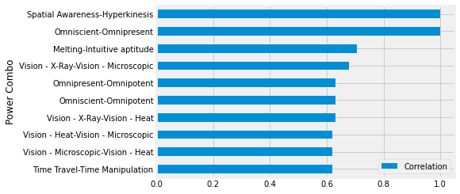
## Sort values
corr_df['Correlation'].sort_values().tail(10).plot(kind='barh')
<AxesSubplot:ylabel='Power Combo'>
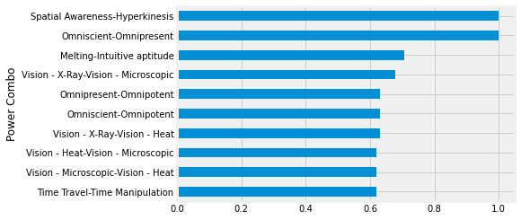
corr_df['Correlation'].sort_values()
Power Combo
Weapons Master-Flight -0.179336
Stealth-Flight -0.157375
Weapons Master-Super Strength -0.154379
Super Strength-Peak Human Condition -0.143948
Peak Human Condition-Super Strength -0.143948
...
Omnipresent-Omnipotent 0.631012
Vision - X-Ray-Vision - Microscopic 0.677827
Melting-Intuitive aptitude 0.706570
Omniscient-Omnipresent 1.000000
Spatial Awareness-Hyperkinesis 1.000000
Name: Correlation, Length: 15010, dtype: float64
corr_df.sort_values('Correlation').tail(25).style.background_gradient()
| Correlation | |
|---|---|
| Power Combo | |
| Danger Sense-Web Creation | 0.542638 |
| Vision - X-Ray-Vision - Telescopic | 0.544597 |
| Symbiote Costume-Web Creation | 0.544973 |
| Durability-Super Strength | 0.549459 |
| Super Breath-Vision - Microscopic | 0.560191 |
| Vision - Telescopic-Vision - Microscopic | 0.564572 |
| Dimensional Awareness-Reality Warping | 0.576688 |
| Cold Resistance-Heat Resistance | 0.580691 |
| Heat Resistance-Cold Resistance | 0.580691 |
| Illusions-Astral Projection | 0.581719 |
| Time Manipulation-Reality Warping | 0.587397 |
| Animal Oriented Powers-Animal Attributes | 0.593247 |
| Omnipotent-Reality Warping | 0.593494 |
| Super Breath-Vision - Heat | 0.609600 |
| Web Creation-Wallcrawling | 0.612852 |
| Time Travel-Time Manipulation | 0.618517 |
| Vision - Microscopic-Vision - Heat | 0.620659 |
| Vision - Heat-Vision - Microscopic | 0.620659 |
| Vision - X-Ray-Vision - Heat | 0.630361 |
| Omniscient-Omnipotent | 0.631012 |
| Omnipresent-Omnipotent | 0.631012 |
| Vision - X-Ray-Vision - Microscopic | 0.677827 |
| Melting-Intuitive aptitude | 0.706570 |
| Omniscient-Omnipresent | 1.000000 |
| Spatial Awareness-Hyperkinesis | 1.000000 |
## Plotn with pandas (barh)
sns.heatmap(corr_df.sort_values('Correlation').tail(25),cmap='Reds')
<AxesSubplot:ylabel='Power Combo'>
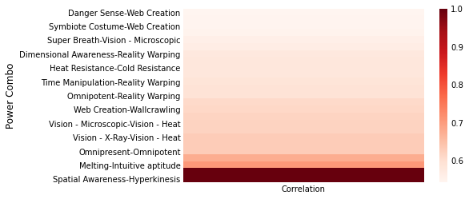
Summary#
In this lab, we demonstrated our mastery of:
Using all of our Pandas knowledge to date to clean the dataset and deal with null values
Using Queries and aggregations to group the data into interesting subsets as needed
Using descriptive statistics and data visualization to find answers to questions we may have about the data
Final Activity#
Make a function to produce a plot and return the fig
Loop through each … Publisher? Gender? and produce the top 10 most highly correlated powers.
Save the figs to a dictionary.
In a For Loop, loop through the dictionary and either:
print out which publisher/gender and then show plot
OR update the title and then store plot “
%%time
corr = df[power_cols].corr()
corr_df = corr.unstack().reset_index()
corr_df.columns = ['Power 1','Power 2','Correlation']
corr_df['keep-me'] = corr_df.apply(lambda row: False if row['Power 1'] == row['Power 2'] else True,axis=1)
corr_df['Power Combo'] = corr_df.apply(lambda row: '-'.join(set(row[['Power 1','Power 2']])),axis=1)
corr_df = corr_df.loc[corr_df['keep-me']==True,['Power Combo','Correlation']]
corr_df.drop_duplicates(inplace=True)
corr_df = corr_df.sort_values('Correlation',ascending=False).set_index('Power Combo')
ax = corr_df.sort_values('Correlation').tail(10).plot(kind='barh')
ax.set_title('Top 10 Most Commonly Co-Occurring Powers')
CPU times: user 9.94 s, sys: 134 ms, total: 10.1 s
Wall time: 10.2 s
Text(0.5, 1.0, 'Top 10 Most Commonly Co-Occurring Powers')
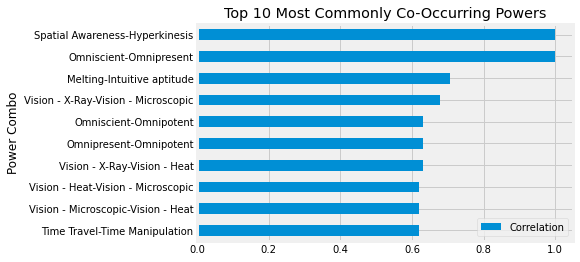
def plot_top_corr_powers(df,power_cols):
corr = df[power_cols].corr()
corr_df = corr.unstack().reset_index()
corr_df.columns = ['Power 1','Power 2','Correlation']
corr_df['keep-me'] = corr_df.apply(lambda row: False if row['Power 1'] == row['Power 2'] else True,axis=1)
corr_df['Power Combo'] = corr_df.apply(lambda row: '-'.join(set(row[['Power 1','Power 2']])),axis=1)
corr_df = corr_df.loc[corr_df['keep-me']==True,['Power Combo','Correlation']]
corr_df.drop_duplicates(inplace=True)
corr_df.dropna(inplace=True)
corr_df = corr_df.sort_values('Correlation',ascending=True).set_index('Power Combo')
ax = corr_df.tail(10).plot(kind='barh')
ax.set_title('Top 10 Most Commonly Co-Occurring Powers')
## Get figure and return
fig = ax.get_figure()
return fig,ax
## Lets do the the top 5 most common Publishers
publisher_list = df['Publisher'].value_counts().head().index
publisher_list
Index(['Marvel Comics', 'DC Comics', 'Dark Horse Comics', 'NBC - Heroes',
'Image Comics'],
dtype='object')
## Lets do the the top 5 most common Publishers
publisher_figs = {}
for publisher in publisher_list:
group_df = df.groupby('Publisher').get_group(publisher)
fig,ax = plot_top_corr_powers(group_df,power_cols)
ax.set_title(f"{publisher}: Top 10 Most Commonly Co-Occuring Powers ")
publisher_figs[publisher] = fig
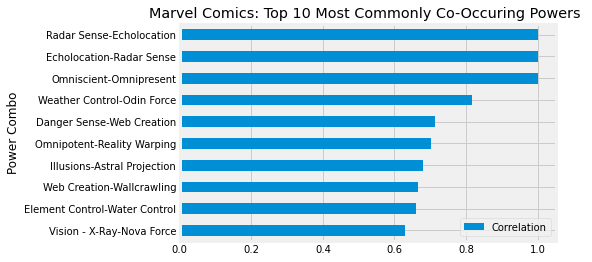
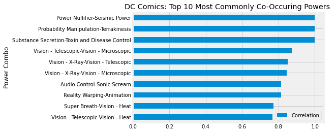
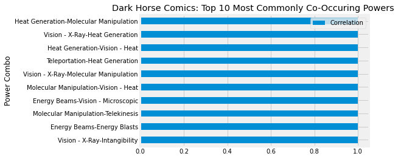
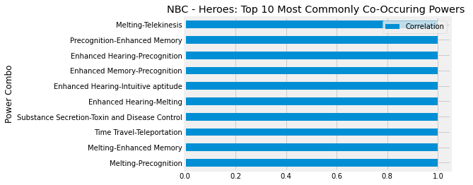
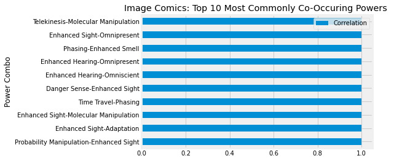
## Use function in a looop and save publisher to dictionary
## Get DC Comics fig
publisher_figs['DC Comics']
If there’s time - Let’s save dc and marvel figures to disk#
## If there's time - Let;s save dc and marvel figures to disk
## If there's time - Let;s save dc and marvel figures to disk
for publisher in ['DC Comics','Marvel Comics']:
fig = publisher_figs[publisher]
fig.savefig(f"{publisher}-most-common-corr-powers.png",transparent=False,
facecolor='white',dpi=300)